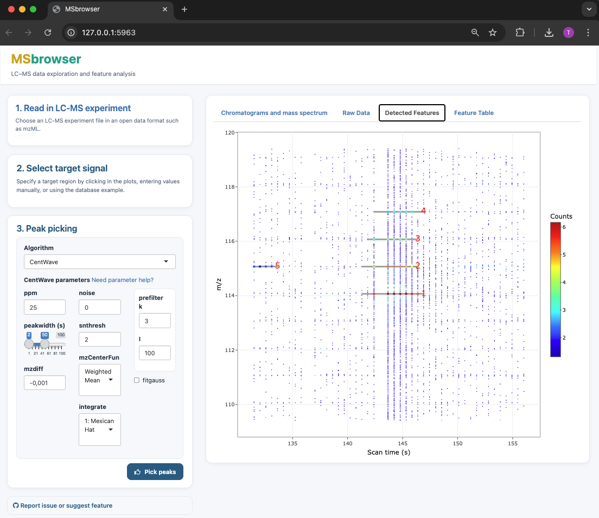

MSbrowser is an R-based Shiny application for interactive inspection of raw LC-MS data and parameter tuning of xcms peak picking algorithms.
The app is designed for rapid and intuitive parameter testing to optimise xcms-based peak picking. Interactive visualisations provide insight into LC-MS data structure and allow users to assess how parameter settings influence feature detection.
MSbrowser is implemented as a Shiny application and distributed as an R package. The application is optimised for use in modern web browsers.

MSbrowser addresses the need to make peak picking of LC-MS data more transparent and reproducible across platforms! Key features of the app include:
- Interactive visualisation of LC-MS data to explore raw signal and noise structure
- Parameter testing and fine-tuning for xcms peak picking algorithms (centWave and matchFilter)
- Fast visualisation of peak picking results
App installation and launch
MSbrowser is hosted on GitHub and depends on the Bioconductor package xcms (version ≥ 3.6) for feature detection.
# Install missing CRAN packages
needed <- setdiff(c("devtools", "BiocManager"), installed.packages()[,"Package"])
if(length(needed)) install.packages(needed)
# Install or update xcms (>= 3.6) from Bioconductor
if(!requireNamespace("xcms", quietly=TRUE) || packageVersion("xcms") < "3.6")
BiocManager::install("xcms")Now you’re ready to go for the installation of MSbrowser:
# Install MSBrowser from GitHub
devtools::install_github("tkimhofer/msbrowser")If prompted by the command line, perform necessary package updates.
MSbrowser can be launched with the following R-terminal command:
msbrowser::startApp()A new web-browser window opens with the MSbrowser user interface.
Documentation
MSbrowser provides an interactive workflow for exploring raw LC-MS data and tuning xcms peak picking parameters. Guidance is available directly within the user interface, and additional resources are provided below:
A short walkthrough of the app and parameter tuning workflow:
Video tutorialDetailed guide to centWave parameter settings:
centWave parameter guide
MSbrowser supports open LC-MS data formats including mzML, mzXML, CDF, and netCDF. Vendor-specific formats can be converted using tools such as ProteoWizard or GNPS.
Example data
MSbrowser can be tested using a human urine LC-MS dataset (HILIC-ESI(+)-Q-TOF-MS), available via the lcmsData package:
devtools::install_github("tkimhofer/lcmsData")Got questions or suggestions? Log an issue on GitHub (requires login) or drop me an email!